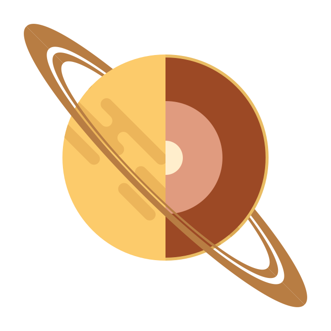
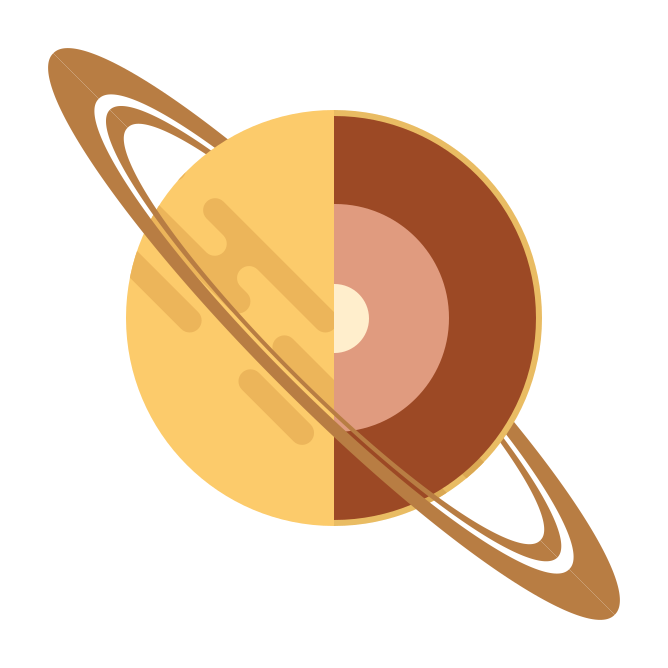

Saturn is the sixth planet from the Sun and the second-largest in the Solar System, after Jupiter. It is a gas giant with an average radius of about nine and a half times that of Earth. It only has one-eighth the average density of Earth.
Despite consisting mostly of hydrogen and helium, most of Saturn's mass is not in the gas phase, because hydrogen becomes a non-ideal liquid when the density is above 0.01 g/cm3, which is reached at a radius containing 99.9% of Saturn's mass.
The outer atmosphere of Saturn contains 96.3% molecular hydrogen and 3.25% helium by volume. The planet's most famous feature is its prominent ring system, which is composed mostly of ice particles with a smaller amount of rocky debris and dust.
 
